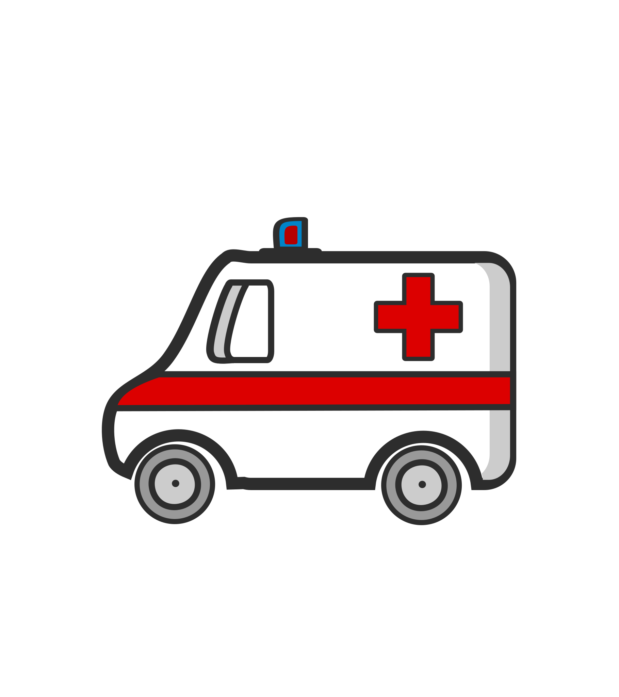
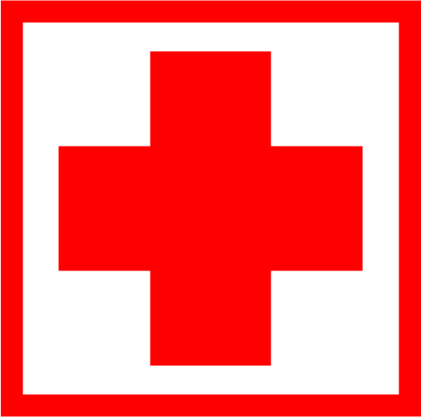
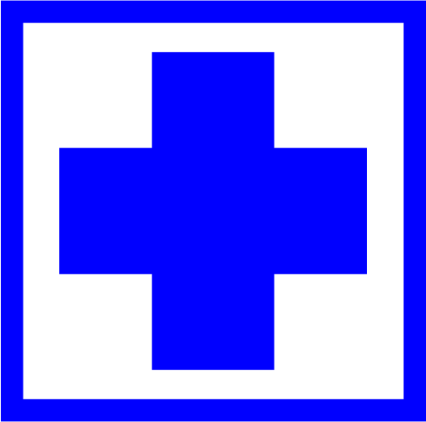
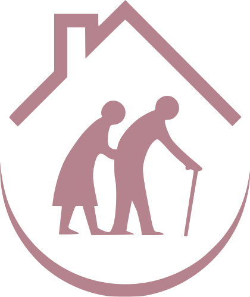
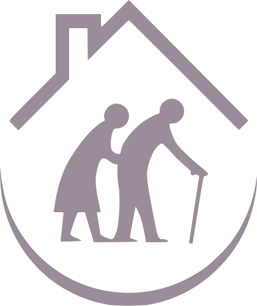

La sezione contiene la geolocalizzazione di infrastrutture sanitarie ottenute da incrocio di informazioni provenienti da database regionali e nazionali, e riferimenti contestuali rilevanti per l'implementazione delle Oasi Climatiche da OpenStreetMap:
Sono inclusi, allo scopo di facilitare la valutazione dell'implementazione delle Oasi Climatiche:
- Presidi del sistema di emergenza-urgenza:

Punti di primo intervento (PPI)- Pronto soccorso (PS)
- DEA I livello
- DEA II livello
- Ospedali censiti:

Strutture pubbliche
Strutture private
- Case di Comunità censite (CdC):
- Presidi socio-assistenziali per anziani:
- Case di riposo, case albergo e case albergo per anziani
- Case famiglia

Case protette- Centri diurni

Comunità alloggio- CRA
- Gruppi appartamento
- Residenze protette
- Alloggi con servizi
- Punti di interesse (OSM):
- Edifici e strutture rilevanti (panchine, ripari, stazioni, biblioteche, scuole, università, centri comunitari, ospedali, centri commerciali)
- Spazi verdi (alberi, parchi)
- Spazi e Infrastrutture blu (punti di acqua potabile, fontane, toilette, pozzi, bacini idrografici)